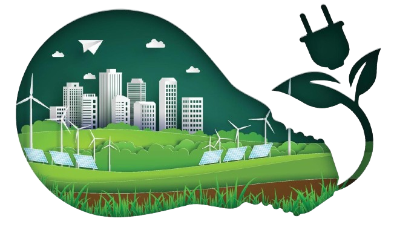
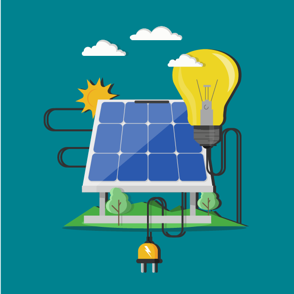
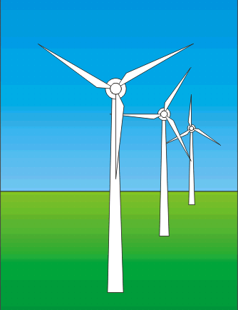
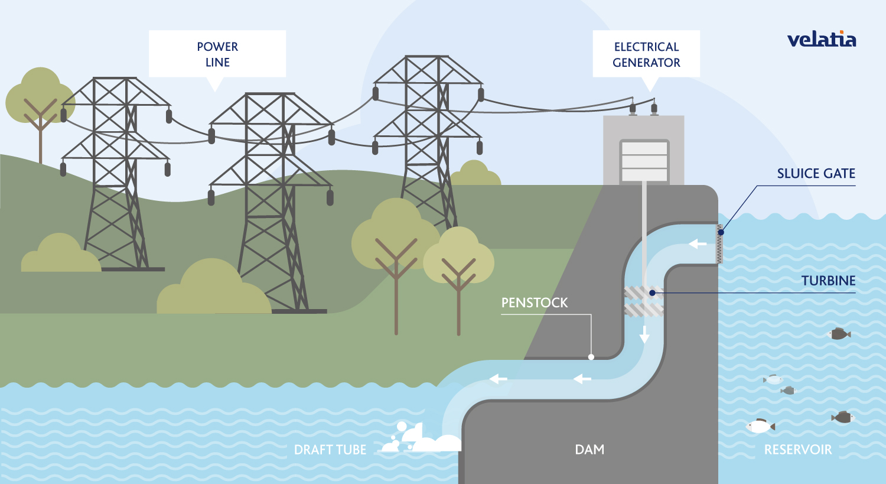
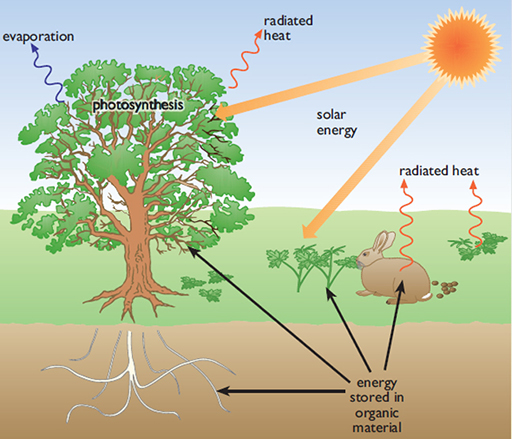
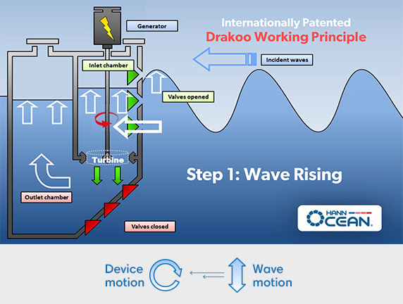
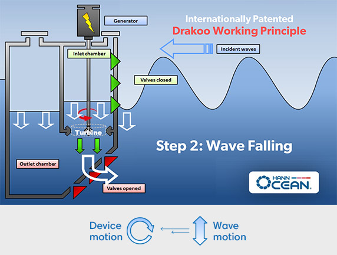

| Solar Energy |
| Wind Energy |
| Geothermal Energy |
| Hydropower |
| Broenergy |
| Ocean Energy |

Types of Green Energy
| There are many different types of green energy, and they are all used in different ways. Some places might not be able to use a certain type, because of the conditions of the area. Some types are easier or harder to use from others, because of the technology needed to created energy from them. But all these types are so much safer for the environment and are great substitutes for fossil fuels. |
|

Solar energy comes from the light given off from the sun, also known as electromagnetic radiation. There are two main types of solar energy technologies—photovoltaics (PV) and concentrating solar-thermal power (CSP). PV is the more well-known technology because it is used in solar panels. This works by the PV cells in the panels absorbing the energy from sunlight. CSP uses mirrors to concentrate sunlight onto receivers that collect and convert sunlight. These technologies can deliver heat, cooling, natural lighting, electricity, and fuels to a variety of applications. Click here to go back up to the top |
Wind Energy
|

Wind energy is the harnessing of kinetic energy which happens when wind is collected on or off shore. This is possible with the use of Wind turbines, which collect and convert the kinetic energy that wind produces into electricity to help power the grid. Average wind speeds vary considerably by location, the world’s technical potential for wind energy exceeds global electricity production. Click here to go back up to the top |
Geothermal Energy

Geothermal energy is created by using the thermal energy in the Earth’s interior. This is done by extracting heat using contraptions such as wells. This heat is constantly replenished because of the decaying of radioactive elements. This technology has been used for over 100 years and has the promise of being able to be used for many more. Click here to go back up to the top |
Hydropower
|

Hydropower is created by the harnessing of water’s energy when it moves to higher or lower elevations. Hydropower reservoirs have many uses including providing drinking water, water for irrigation, flood and drought control, navigation services, as well as energy supply. This is a very popular type of green energy because it’s one of the cleanest and most productive types of energy. Click here to go back up to the top |
Bioenergy
|

Bioenergy uses a variety of organic materials to produce energy, which includes wood, charcoal, and manures. These are known as biomass materials. Usually this is used in rural areas for cooking, lighting, space heating, generally by poorer populations in developing countries. Bioenergy creates greenhouse gas emissions, but at lower levels than burning fossil fuels like coal, oil or gas. These are referred to as biofuels. However, bioenergy should be used in limited applications because of its potential negative environmental impacts. Click here to go back up to the top |
Ocean Energy
|


Ocean energy uses the kinetic and thermal energy from saltwater. The best way to produce this specific energy is from the waves and currents that come from oceans. This is a new technology, so it’s still in its early stages of development, but the scientists creating it are positive it’s potential exceeds current day technologies. Click here to go back up to the top |